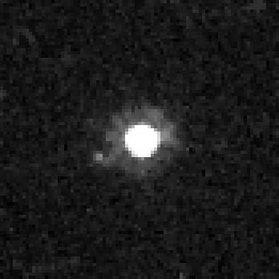

Quaoar and Weywot imaged by Hubble Space Telescope
Quaoar is a trans-Neptunian object and a likely dwarf planet in the Kuiper belt.
It is named after the Tongva god-creator.
There are signs of water ice and cryovolcanism on Quaoar, similar to some other large dwarf planets.
Quaoar has one natural satellite, Weywot, and a ring system, similar to Haumea.
Quaoar was discovered on 4 June 2002 by astronomers Chad Trujillo and Michael Brown at the Palomar Observatory.
At the time, these two were part of a team searching for large objects beyond the orbit of Neptune.
The reason for the search was due to the discovery of many new objects near Pluto's orbit, suggesting that there might be even more with similar sizes.
It was the largest such object at the time (apart from Pluto, which was still grouped with the eight planets).
The discovery was later announced on 7 October.
Since then other objects were simply added to the numbered list at the time their orbits were confirmed, without any special numbers.
In 2007, a moon was discovered around Quaoar, receiving the name Weywot.
Quaoar is named after the Tongva god-creator Quaoar.
The deity is refered to by other names by other related tribes of southern California, including Kwawar, which was the original proposal.
The Tongva people are the native population of the lands where the Palomar Observatory was located.
Quaoar received a round minor planet number 50000 to signify the milestone, similar to earlier record holder 20000 Varuna, and had a provisional name 2002 LM60.
Orbit and rotation
Quaoar is a trans-Neptunian object, located in the Kuiper belt.
It is a classical (cubewano) KBO, meaning it is not resonant with Neptune.
It has a semi-major axis of 43,7 AU, with a perihelion of 41.9 AU and an aphelion of 45.5 AU.
It takes 288.8 years for Quaoar to complete one orbit around the Sun.
It has an inclination of 7.99° and an eccentricity of 0.04.
The axial tilt is assumed to be 12.6° based on the rings it has.
Quaoar completes one rotation every 17,7 hours.
Quaoar is one of the largest TNOs and is a likely dwarf planet.
Latest star occultation measurements suggest a triaxial ellipsoid with a mean diameter at around 1,090 km.
Its elongated shape is not sufficient with hydrostatic equilibrium for its current rotation and is likely a remnant from a time before the tidal forces with Weywot slowed Quaoar's rotation.
Quaoar is likely differentiated and gravitationally round.
The densitiy is estimated to be between 1.67-1.77 and the composition is approximately 2/3 rock and 1/3 low-porosity ice.
The surface of Quaoar is relatively dark and moderately red, comparable to the similarly large Gonggong (although the latter is slightly brighter and redder).
The red color is due to the build-up of complex organics, known as tholins, a product of methane and nitrogen under cosmic radiation.
Early spectroscopic analysis has detected crystalline water and ammonia hydrate.
Crystalline water suggest relatively recent formation, since radiation would break it down into its amorphous form.
It is possible that cryovolcanism has created these features, though radiogenic heating alone is insufficient for the formation of a subsurface ocean.
Other substances detected were methane and ethane.
Low- and medium-resolution near-infrared spectroscopic measurements obtained by James Webb Space Telescope in 2022 show the clear presence of water, as well as methane, ethane, complex organics, carbon dioxide and monoxide, and possibly hydrogen cyanide.
Since Quaoar has methane present, is massive enough and approaches the Sun at perihelion close enough for the methane to sublimate, it is suggested that there is a tenuous atmosphere present.
Stellar occultations have not shown any substantial evidences so far.
Quaoar has one satellite - Weywot.
It is named after the son of Quaoar and the sky father god of the Tongva people.
It orbits at distance of about 13,300 km and is thought to be approximately 170 km in diameter.
Weywot has slowed down the previously fast rotating and elongated Quaoar.
During an unexpected star occultation in 2025, a possible second moon has been detected.
If it truly exists, it would orbit Quaoar at about 5,800 km and would be 30 km in diameter.
Currently, the theoretical object is too dim to be detected.
Quaoar has two faint rings.
The first, Q1R, was confirmed in early 2023 and is partially dense, with a radius of about 4057 km.
The second, Q2R, has a smaller radius of 2520 km and was discovered later the same year.
This makes it one of four known minor planets wit rings, the other three being Haumea, Chariklo, and Chiron.
Quaoar has not been visited by a spacecraft.
New Horizons has observed Quaoar from an unobtainable on Earth angle at a distance of 14 AU.
It is estimated that it would take 13.6 years to reach Quaoar with a Jupiter gravity assist, current technology, and several launch dates, earliest of which is 25 December 2026.
CNSA has proposed the heliosphere exploration mission Shensuo, which could have Quaaor as a secondary target.
External links
{% include catplanets.html %}

{kind=link}